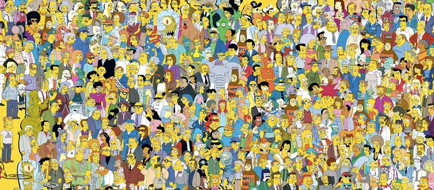

Areas - Personajes Los Simpson
Intenta encontrar a Marge, Lisa, Homer y Nelson en la imagen y haz click sobre ellos para acceder a su ficha en la wiki de los simpson

enlaces en imagenes Personajes Los Simpson
Intenta encontrar a Marge, Lisa, Homer y Nelson en la imagen y haz click sobre ellos para acceder a su ficha en la wiki de los simpson
